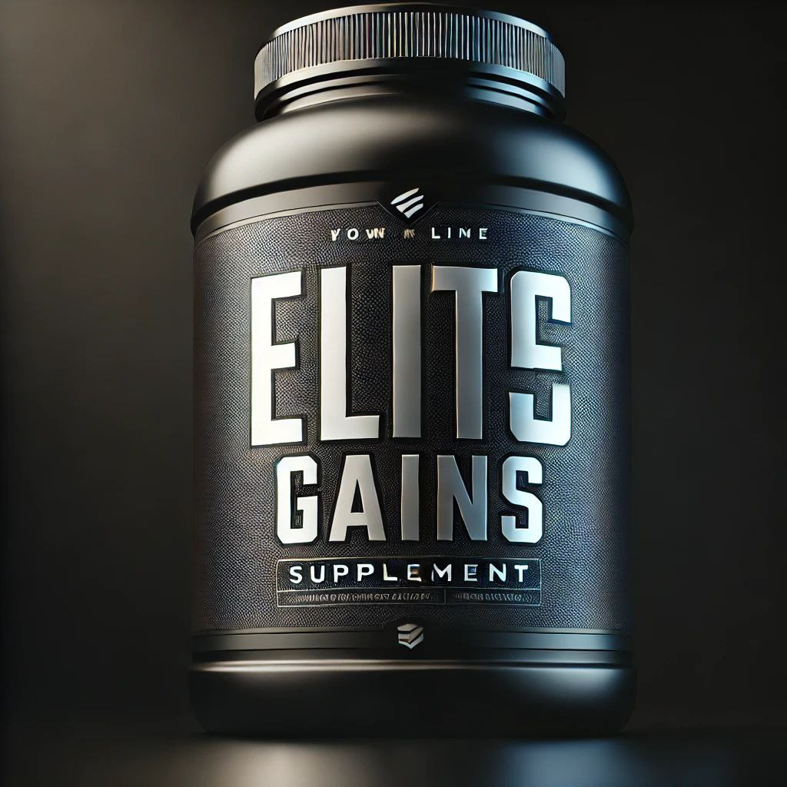
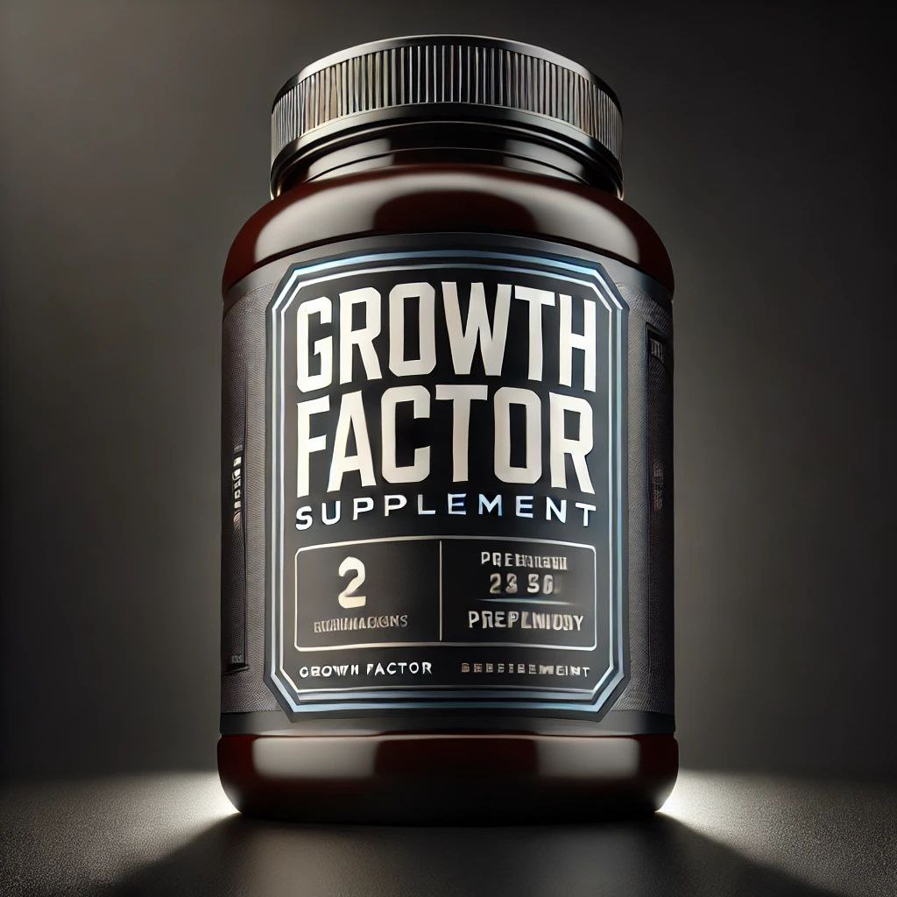
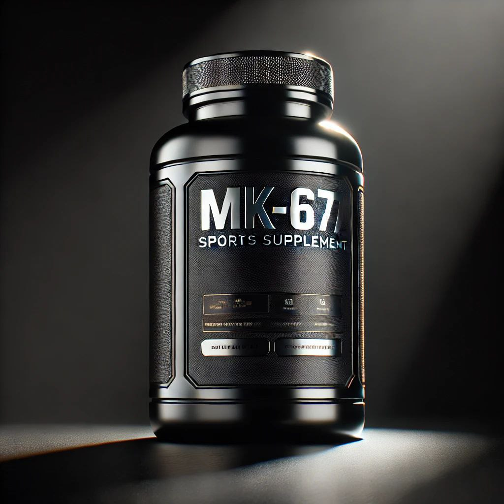
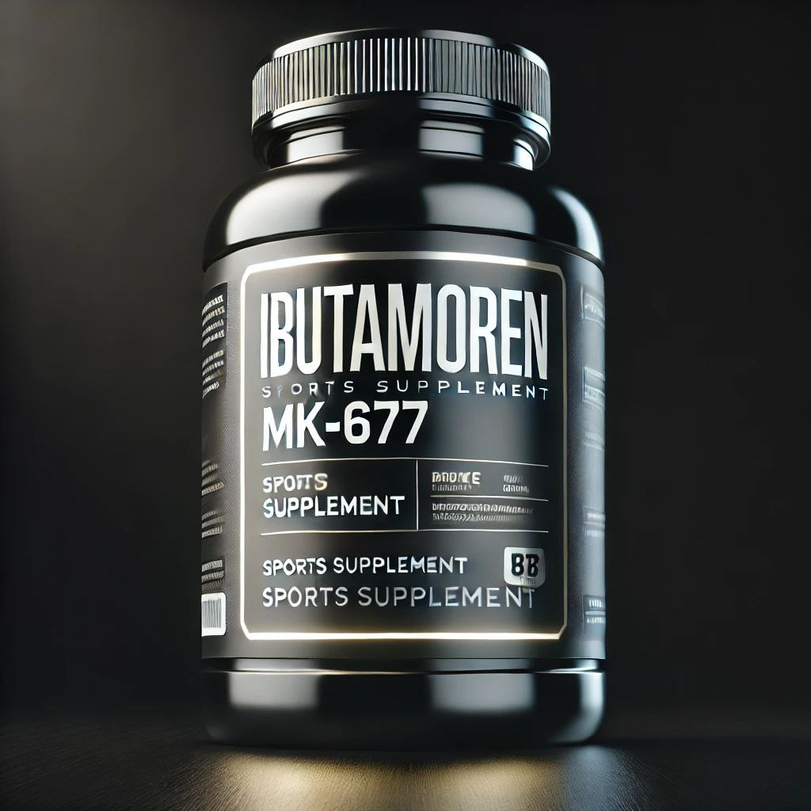
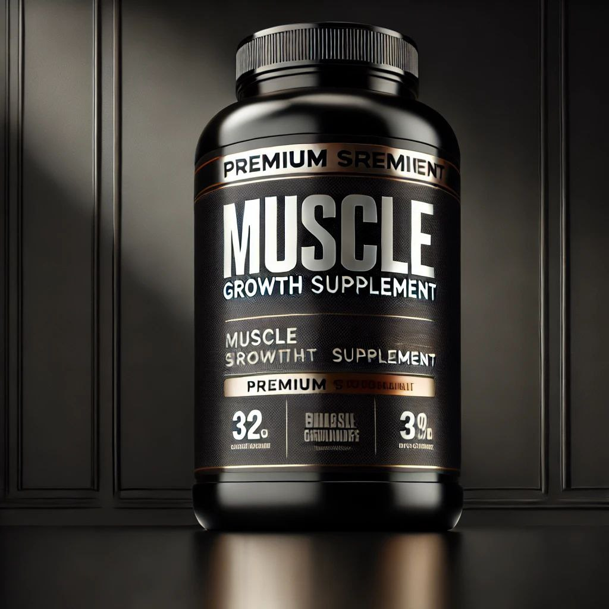
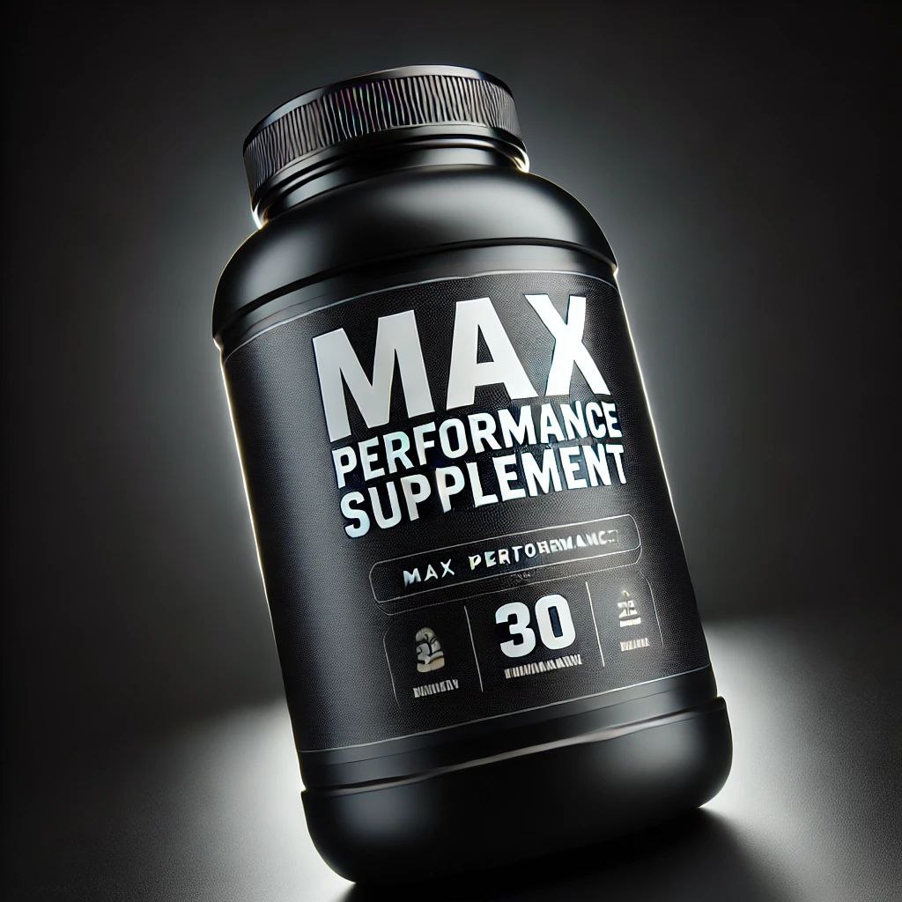
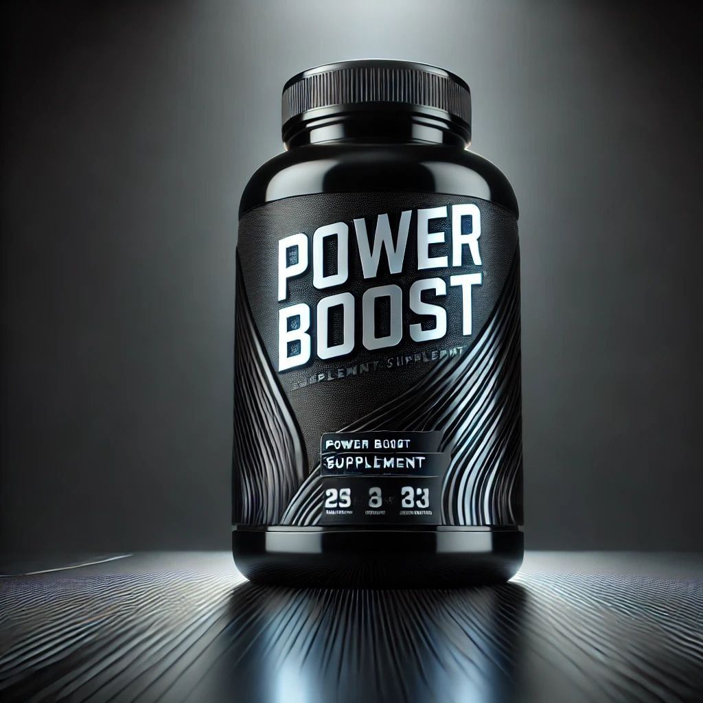
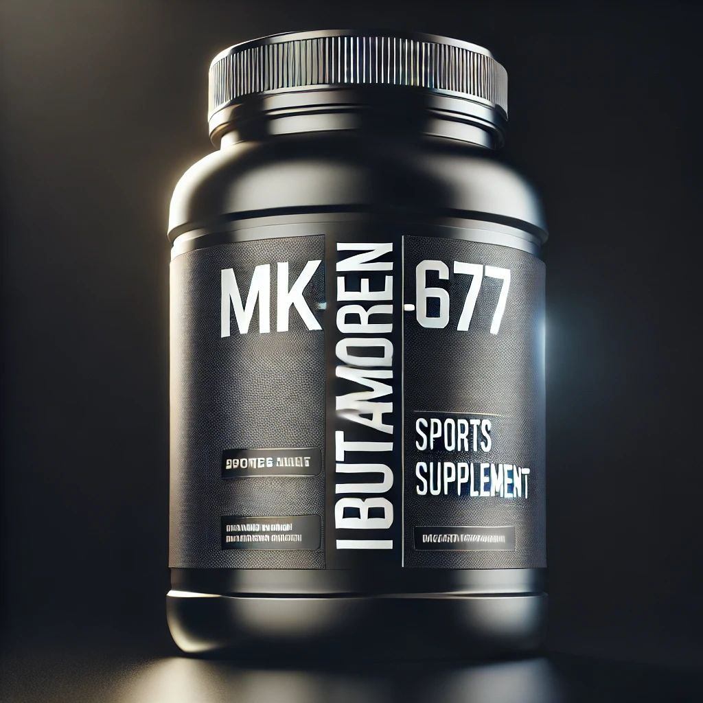
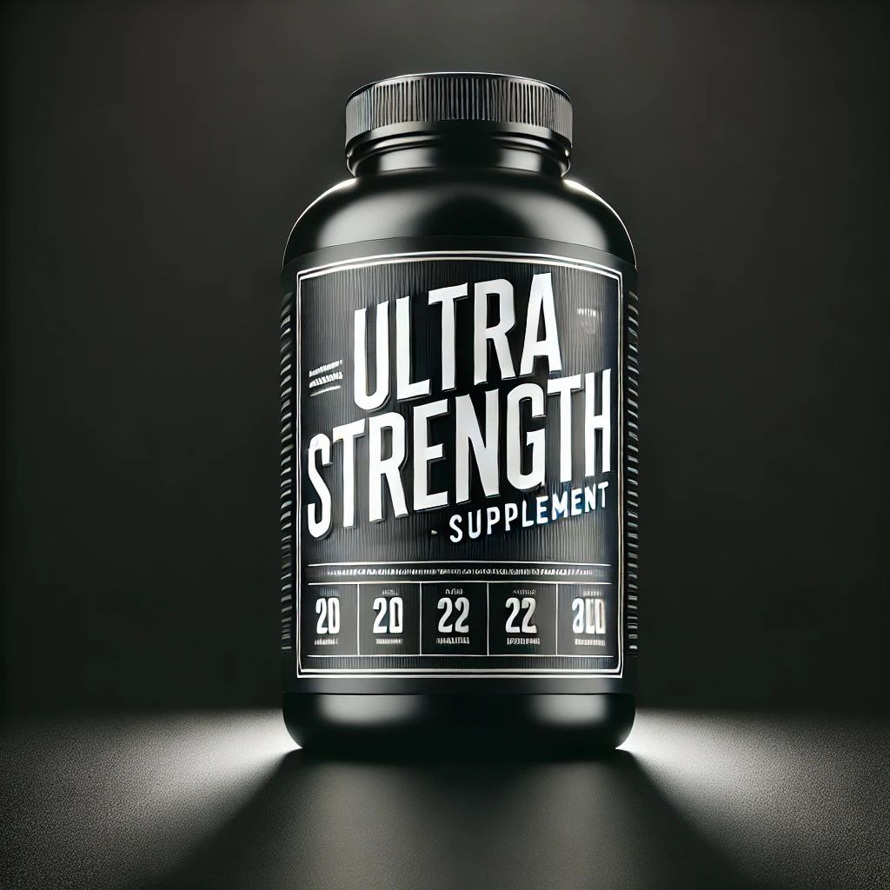

Elite Gains
разработан для спортсменов, стремящихся к быстрому увеличению мышечной массы и силы.
Состав (на 1 порцию):
- Ibutamoren (MK-677) – 20 мг
- BCAA 2:1:1 – 1500 мг
- Омега-3 – 500 мг

Growth Factor
это инновационная формула для быстрого набора массы, улучшения аппетита и повышения уровня гормона роста.
Состав (на 1 порцию):
- Ibutamoren (MK-677) – 25 мг
- Глютамин – 500 мг
- Витамин B12 – 2 мкг
- Экстракт гуараны – 200 мг

MK-677
создан для тех, кто хочет максимальной силы и выносливости. Подходит как для профессионалов, так и для любителей.
Состав (на 1 порцию):
- Ibutamoren (MK-677) – 30 мг
- Магний – 120 мг
- Цинк – 10 мг
- L-Тирозин – 300 мг

Ibutamoren
это мощный комплекс для анаболического роста, улучшения восстановления и повышения тестостерона.
Состав (на 1 порцию):
- Ibutamoren (MK-677) – 20 мг
- D-аспарагиновая кислота – 1000 мг
- Экстракт трибулуса – 500 мг
- Витамин E – 20 мг

Muscle Growth
это мощная добавка для набора мышечной массы, разработанная для увеличения силы, выносливости и восстановления после тренировок.
Состав (на 1 порцию):
- Ibutamoren (MK-677) – 25 мг
- Витамин B6 – 10 мг
- L-Аргинин – 500 мг
- Экстракт женьшеня – 100 мг
- Биоперин – 5 мг

Max Perfomance
помогает улучшить качество сна, восстановление и рост мышц благодаря продвинутой формуле.
Состав (на 1 порцию):
- Ibutamoren (MK-677) – 25 мг
- Мелатонин – 3 мг
- Глицин – 500 мг
- Витамин D3 – 1000 МЕ

Power Boost
предназначен для увеличения уровня энергии, ускорения восстановления и стимуляции выработки гормона роста.
Состав (на 1 порцию):
- Ibutamoren (MK-677) – 20 мг
- L-Глутамин – 500 мг
- Магний – 100 мг
- Экстракт родиолы розовой – 200 мг

Sport Supplente
продвинутая добавка для увеличения мышечной массы, ускоренного восстановления и повышения уровня энергии.
Состав (на 1 порцию):
- Ibutamoren (MK-677) – 25 мг
- L-Аргинин – 500 мг
- Коэнзим Q10 – 100 мг
- Экстракт женьшеня – 200 мг

Ultra Strength
создан для максимального усиления физических показателей и ускоренного набора мышечной массы.
Состав (на 1 порцию):
- Ibutamoren (MK-677) – 30 мг
- Цинк – 15 мг
- Креатин моногидрат – 1000 мг
- L-Цитруллин – 500 мг